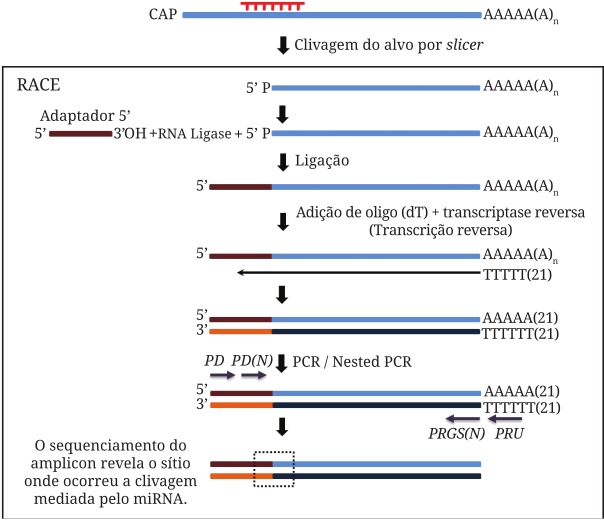

13 Abordagens computacionais e moleculares para identificação de alvos
13.1 Como identificar os alvos dos miRNAs in silico? Quais são as possíveis estratégias?
Existem diversas estratégias, algumas delas espécie-específicas e outras mais abrangentes, que pressupõem características da sequência para seu bom funcionamento, algumas delas são:
TargetScan, esse software, além de analisar se a seed do miRNA pareia totalmente com a sequência 3’ UTR do alvo, realiza a interseção das interações encontradas com informação de ortólogos, sendo somente as interações semelhantes às observadas em grupos ortólogos mantidas.
Outros programas, como miRanda e Diana, permitem uma flexibilização crescente em questão ao pareamento da seed com a 3’ UTR, alguns permitindo também pareamentos com a sequência codante.
Uma que já tive oportunidade de usar no trabalho de outra disciplina é a MiRmap (Vejnar and Zdobnov 2012), que utiliza uma série de 11 features ou caracteristicas da análise em questão, características estatísticas, químicas, filogenéticas e moleculares, e as insere em um modelo de aprendizagem de máquina para realizar a predição.
13.2 Como identificar alvos baseado na superexpressão de miRNAs?
Pressupõe que a superexpressão do miRNA (muitas vezes acompanhada de um aumento concomitante da expressão do alvo computacionalmente predito) provavelmente aumentará a regulação do seu alvo de forma a ser experimentalmente visível.
13.2.1 Como Northern blot auxilia nessa busca?
O exemplo trazido ilustra o uso do blotting para detectar o acúmulo do alvo predito: Em amostras com ausência do miRNA observou-se altas concentrações do alvo, porém em amostras com superexpressão do miRNA, havia decréscimo considerável da expressão do alvo. Porém, é claro, esse método só detecta miRNAs que clivam seu alvo.
13.2.2 Acompanhada por ensaios de bioluminescência
No sentido de abranger mais mecanismos que apenas a clivagem, pesquisadores desenvolveram um método em que é realizada a transfecção de um vetor contendo a sequência 3’ UTR do alvo predito junto a uma luciferase ou outra proteína fluorescente; se a interação predita em silico for de fato real, ao haver a transfecção de um vetor contendo a sequência do miRNA de estudo, deve observar-se uma queda no sinal de fluorescência, que pode ser tanto devido a clivagem quanto a inibição da tradução.
13.2.2.1 Controles negativos
Alternativas são:
A utilização de miRNAs scrambled, ou seja, incapazes de interagir com os elementos regulatórios da 3’ UTR, que indicaria a importância da sequência para o reconhecimento.
A mesma ideia da anterior, porém o contrário, com a ocorrência de alterações na sequência da 3’ UTR, que indicaria precisamente em que seções da sequência o miRNA interage.
13.2.2.2 Normalização
Utilização de duas fluorescências, uma não relacionada ao miRNA, que possibilitaria visualizar que houve a transfecção do vetor na célula.
13.2.2.3 Limitações
Possui baixa escalabilidade, pois fica inviável analisar mais de um alvo de uma só vez.
13.2.3 Seguida por microarranjos, NGS ou proteômica
Microarranjos: Observar genes com aparente baixa expressão, que pode indicar que sejam alvos do miRNA de estudo. Para controlar falsos positivos, realizar o mesmo teste em amostras com miRNAs não funcionais. Só detecta alvos que são regulados por clivagem.
NGS: Mesmo desenho experimental que microarranjos, com as mesmas limitações, porém com as vantagens que NGS carrega consigo.
Proteômica: Observaria o impacto da superexpressão dos miRNAs no produto final: As proteínas.
13.3 Como identificar alvos clivados por miRNAs usando a 5’ RACE?

Após a clivagem do RNA alvo pela argonauta, acontece a ligação de um adaptador na extremidade recém-exposta, há a síntese de uma fita de cDNA por meio da transcriptase reversa, e então essa fita passa por PCR, uma não-específica, e outra específica, de forma que após o sequenciamento dos fragmentos amplificados, possam ser discriminadas a sequência alvo onde o miRNA se ligou e onde houve a clivagem.
13.4 Como identificar alvos de miRNAs em escala genômica?
- GMUCT: Técnica derivada da PARE, que por sua vez é derivada da 5’ RACE. Ocorre com a ligação de adaptadores à 5’ exposta pela clivagem do miRNA, onde a enzima MmeI ancora e cliva, gerando uma sequência de 20nt a qual provavelmente é o ponto de reconhecimento do miRNA e expondo uma extremidade a 3’, onde outro adaptador pode se ligar. A biblioteca é então amplificada por PCR direcionada aos oligonucleotídoes das sequências adaptadoras. A biblioteca pode passar então, por sequenciamento (NGS), podendo assim ser analisada por bioinformática.
13.5 Imunoprecipitação de proteínas Argonauta
Permitem a análise de alvos que não são regulados apenas por clivagem, como é o caso da maioria dos processos anteriores.
RIP-Chip: Em que o RNA extraído com a imunoprecipitação é hibridizado em um microarranjo. Gera muitos falsos positivos, visto que utiliza todo o RNA extraído, não apenas aqueles que interagem com Argonauta.
TAP-Tar: Mesmo processo que RIP-Chip, porém com a utilização de duas imunoprecipitações em conjunto à inserção de um miRNA marcado com biotina na amostra. Presume-se que o miRNA marcado será incorporado na argonauta e o segundo processo de precipitação reduzirá significativamente o número de falsos positivos. Ainda assim, resultados falsos podem vir a luz, visto que as técnicas utilizam extratos celulares, podendo ocorrer interações anômalas entre miRNAs e mRNAs que não seriam observadas in vivo.
HITS-CLIP: “Congelamento” dos miRNAs ligados à argonauta ainda na célula, por meio de ultravioleta - que catalisa a formação de ligações covalentes entre RNA e proteínas, evitando interações que não ocorreriam in vivo.
PAR-CLIP: Aprimoramento da HITS-CLIP, com uma faixa mais restrita de ultravioleta e a utilização de nucleotídeos fotoativos.
Não tenho certeza se entendi totalmente as duas técnicas seguintes, porém aqui vão as ideias gerais que tive.
iCLIP: Em que peptídeos ancorados na sequência impedem a realização normal da transcrição reversa, gerando fragmentos “truncados”, precisamente na posição onde há a interação. Esses fragmentos, que circularizam, podem ser então linearizados com enzimas de restrição, amplificados e sequenciados.
CLASH: Ocorre a formação de uma quimera do miRNA com seu mRNA alvo, esses RNAs híbridos são sequenciados e posteriormente, por bioinformática, é reconstruído o pareamento original.